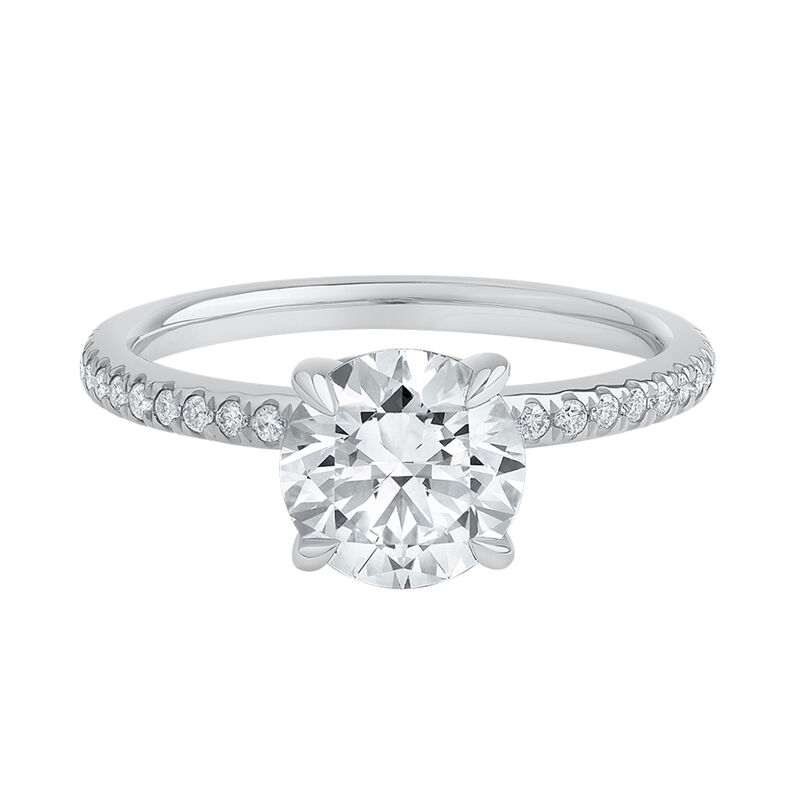
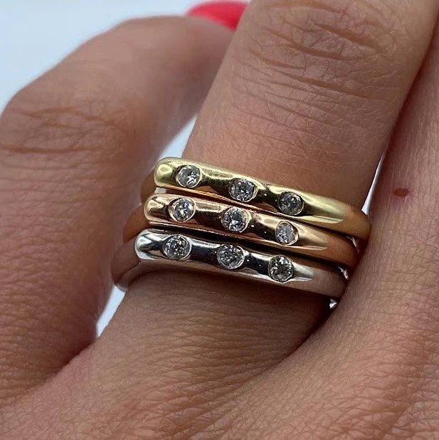
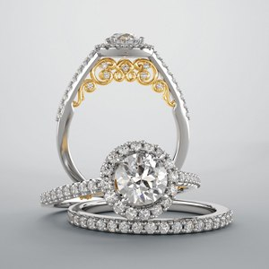
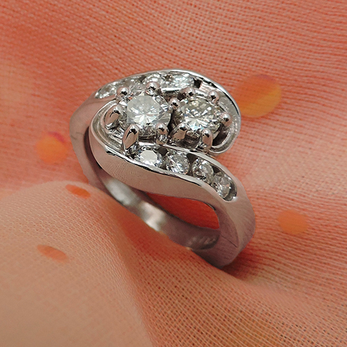

Posted on June 20, 2025
How to Choose the Perfect Wedding Ring: A Deep Dive for Couples
Your wedding ring is more than just a piece of jewelry—it’s a lifelong emblem of your love and commitment. With so many styles, metals, gemstones, and ethical considerations, doing your homework before buying is essential. Here’s a detailed guide on how to make this meaningful choice—and spotlighting some top Colorado Springs jewelers who can help.
1. Why Doing Research Matters
Navigating the world of wedding rings can feel overwhelming—but thoughtful research pays off in three big ways:
- Quality & durability: A well-made ring lasts generations, not just years.
- Value & cost: Comparing materials and settings saves money without sacrificing beauty.
- Ethical sourcing: Knowing where your diamonds and metals come from gives you confidence and peace of mind.
Choosing a trusted jeweler also ensures you have guidance on sizing, engraving, and after‑care—for lifelong bliss!
2. What to Consider When Choosing Your Wedding Ring
✔️ Metal Type: Gold, Platinum, Titanium & Cobalt
Common metals include:
- Yellow, white, or rose gold—classic, easily resized, though soft.
- Platinum—rare, hypoallergenic, extremely durable, but premium priced.
- Titanium & cobalt—modern, lightweight, durable. Cobalt rings are scratch-resistant but often non‑resizable :contentReference[oaicite:1]{index=1}.
✔️ Style & Profile
Do you want something:
- Classic and simple (a polished band)?
- Gem‑set (diamonds, sapphires, colored stones)?
- Custom with wood inlays or hammered textures?
Revolution Jewelry Works offers creative inlays—from meteorite to exotic wood—to match your personality.
✔️ Comfort & Fit
Comfort-fit bands are rounded inside, making daily wear barefoot-friendly. Many jewelers—including Revolution—offer this as a standard option.
✔️ Sizing and Lifestyle Match
Your lifestyle matters: heavy-lifters may want metal types that resist scratches; others prefer thin, delicate stacking bands. Try styles on—most stores let you do this during consultation.
3. What Quality Really Means in a Ring
High-quality rings don’t just look better—they’re built to last and feel good for life:
- Craftsmanship: Smooth interiors, even settings, no rough edges.
- Solid cores, not plating: Rings plated in gold can lose coating; solid metals fare far better.
- Certified diamonds: Always ask for GIA or IGI certificates, even for lab-grown stones.
- Lifetime warranties and service: Many jewelers offer free sizing or cleaning.
Helzberg Diamonds emphasizes long‑term durability and offers a wide range of metals and diamond‑set bands to match both style and value preferences.
4. Top Local Jewelers in Colorado Springs
🔹 Helzberg Diamonds (helzberg.com)
Helzberg offers a full spectrum—from glittering diamond bands to minimalist titanium rings—with helpful financing, lifetime warranties, and certified diamonds :contentReference[oaicite:6]{index=6}. Ideal for those wanting big selection and reliable service.
🔹 Legacy & Co. Jewelers (legacycojewelers.com)
Family-owned and transparent on pricing, Legacy & Co. emphasizes education and in-house craftsmanship. They’re proud to offer custom designs and full appraisals, with over 80 years of jeweler experience.
🔹 Jack Miller Jewelry Designers (jackmillerjewelrydesigners.com)
Since 1979, Jack Miller has been crafting custom engagement & wedding rings with a hands‑on artistic approach. Their downtown workshop ensures you’re part of the creative process.
🔹 Revolution Jewelry Works (revolutionjewelryworks.com)
Voted the “Best of Colorado Springs,” Revolution specializes in unique, custom rings with alternative metals, comfort fit, and rapid three‑to‑six‑week delivery.
5. Common Questions Couples Ask
Can I repurpose heirloom stones❓
Yes! Many modern jewelers allow using grandmother’s diamond in a contemporary setting. It’s sentimental and sustainable.
What are lab-grown diamonds❓
Lab‑grown diamonds offer identical sparkle and certification as mined stones—but at a lower cost and with a greener footprint.
How much should you budget❓
Traditionally the rule was two months’ salary, but now couples spend based on preference. Bands can range from $500 (silver/titanium) up to $3,000+ (diamond‑set or platinum).
How do I care for my ring❓
Get annual cleanings and resizings, store in a jewelry box, avoid heavy chemicals—your jeweler often provides guides.
6. Final Tips Before Buying
- Always see multiple metals and finishes in person.
- Confirm sizing accuracy with your jeweler.
- Request guarantees and written appraisals at purchase.
- Write and engrave something meaningful—it’s your legacy piece!
Choosing the right wedding ring is about balancing durability, beauty, and personal significance. Take your time, ask questions, and lean on experts—and in Colorado Springs, you’re blessed with talented jewelers ready to help craft a ring that truly celebrates your story.
Already found your forever ring? Text or call at 619-500-4737 or email to schedule your $750 wedding photography with Sean Colorado. With the 10 years of experience I have, I am the most affordable wedding photographer colorado springs.
I’d be honored to capture your story—ring, vows, and all.